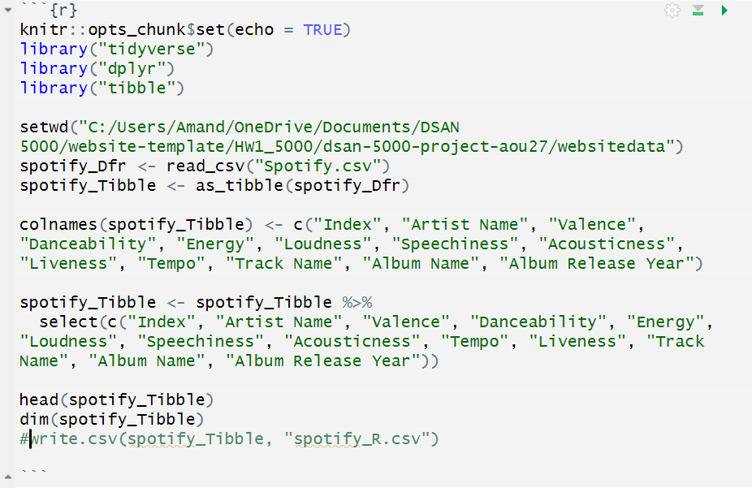
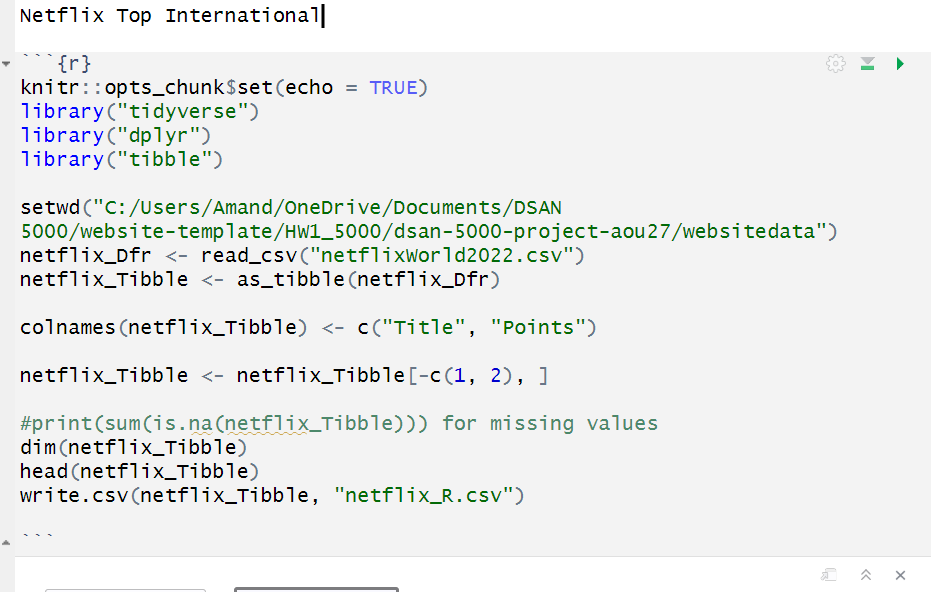
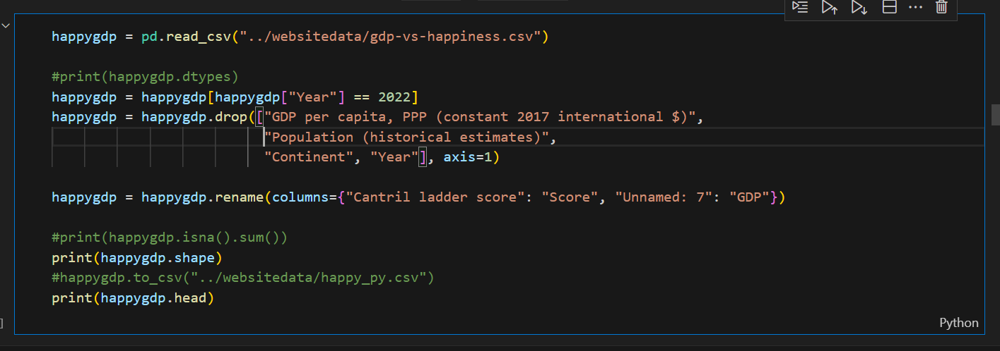
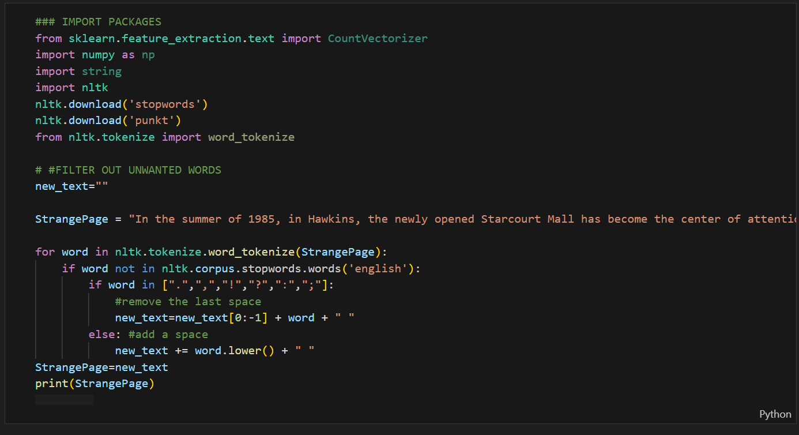
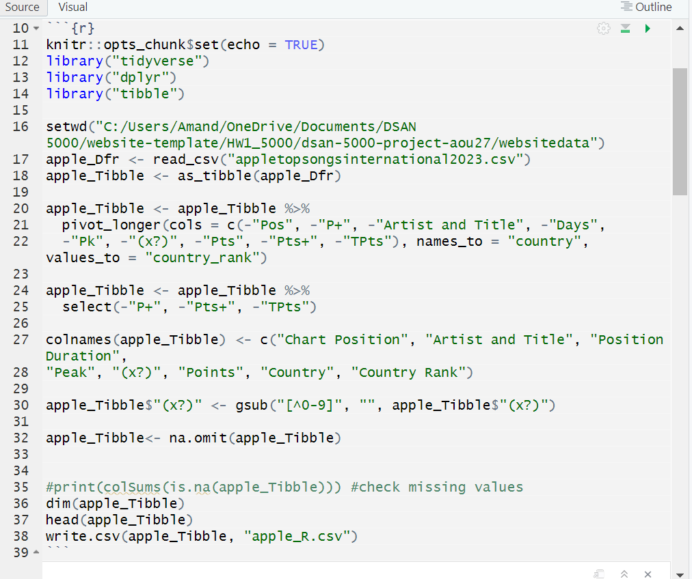
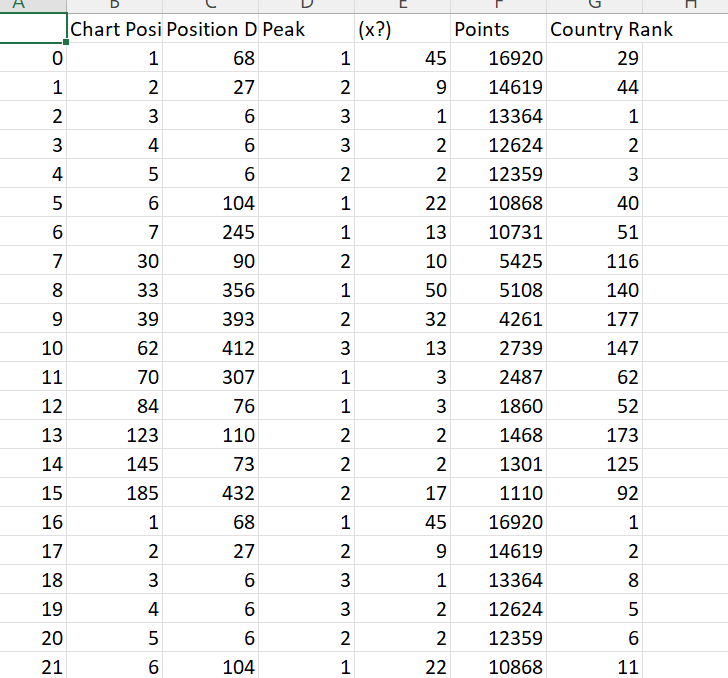
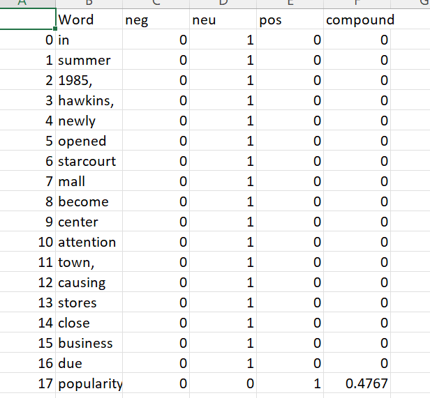
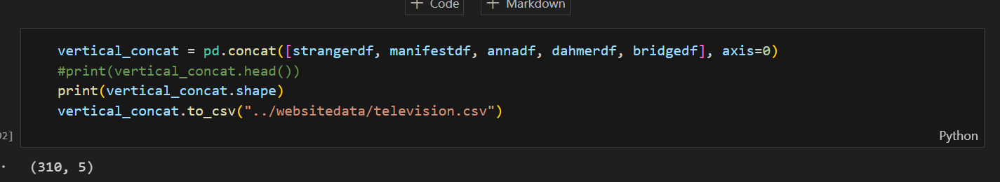

Data Cleaning
All of my detailed data cleaning practices are linked with steps in R and Python. These documents can be found inside the “websitebackupcode” folder on my linked Github repository for my project. This link can be found under the “Data” tab of the website.
Data Preparation for Analysis
In order to prepare my data for analysis, I attempted to do a general tidying and cleaning of all datasets I would need for the different analyses. To start, this mostly entails reading in any CSV (Comma- Separated Values) files or web scraping an API (Application Programming Interface). Fortunately, the APIs I requested are usually pre- formatted and do not require much cleaning, as much as they would need to be formatted to fit the perspective I want to capture. On the other hand, most of the downloaded CSV datasets happen to have many missing values and are in need of a few extra steps of cleaning.
Once I have the raw data I want, Throughout this process, I am checking for missing values in the data and their locations in the datasets, to know if I will need to remove any informative rows or just marginal variables I will not be using.
Apple Music
For my Apple music dataset, I first dropped all missing values. I then melted down variables such as “Pts”, “Days”, and “Peak” to go along with the origin countries of the songs. I then removed anything that was not an integer from the (x?) column to represent the amount of times a song has been at that position. I then saved the cleaned version of my Apple dataset to a new CSV file.
Spotify API
My Spotify dataset was already put together and void of issues, such as missing values, due to my previous R language request. Thus, the work required to clean the dataset did not require a large amount of time. My column names were generated by the API call, so I renamed all the variables to not include any excess characters. I did not delete any columns, just so my future feature selection is as accurate as possible. I then saved the cleaned dataset to another CSV file.

Netflix
For my Netflix dataset, I renamed my column titles to a more precise description of what my features are meant to capture: the titles of the most- watched television shows and the amount of points each show has. I then deleted the first two rows, as they were repetitive displays of the column names. Last, I checked for any missing elements. Once I could see each column did not contain any missing values, I saved the cleaned dataset to a CSV file that can be found on my Github repository.

GDP vs Self- Reported Life Satisfaction
My dataset for the GDP vs. Self- Reported Life Satisfaction was quite extensive. As the dataset contained data for countries over many years, I first read in my dataset and then subsetted the dataframe to only show information that pertains to the life satisfaction scores reported for the year 2022. My data source was not able to gather data on the gross domestic product (GDP) per capita for the year 2022 for each country, so I had to delete the column. The column was previously filled with GDP per capita information from the year 2017, so I resorted to gathering my own information on each country’s GDP per capita from the World Bank. As a side note, three countries’ GDP per capita indices were not provided on the World Bank’s site. So, I accessed data from Trading Economics to get the data points for Palestine and South Korea. Likewise, to get the GDP per capita information for Taiwan, I accessed the data information provided by Focus Economics.
In addition to dropping the previous “GDP per capita” column, I also eliminated the population, continent, and year (it was all for 2022) data. To precisely capture my dataset’s objective, I then renamed the Cantril Ladder Score column and gave a name to my updated GDP per capita column. Finally, I made sure there were no missing values and then saved the cleaned dataset to a new CSV file.

Wikipedia API
My one other dataset source generated from an API call were my Wikipedia API datasets. For each of the top 5 Netflix shows I wanted to look at, I requested the information from Wikipedia’s website. For each show, I requested the most recent and available season to get access to the premise of the season. Once I was able to receive the premise, I generated a function to remove excess stopwords from the premise. After that, I recorded the sentiment analysis for each word that was left of the premise. Using the Sentiment Intensity Analyzer from the Natural Language Toolkit’s sentiment package, I could now see which words were considered negative, neutral, and positive and their associated sentiment compound scores. These variables were put in a dataframe once completed. I noticed that some dataframes considered “’s” as a word, so I had them removed as a final step before saving the dataset to a CSV file.
Once each television show premise was made into its own dataframe and saved to its own CSV file, I combined them. I did a vertical concatenation on the top five Netflix television shows as a final step before analysis commenced.

For reference, I have posted my data cleaning process for one of my datasets– the Apple Music dataset. In the “Data Gathering” tab, you can see a general idea of what the original, raw dataset looks like. Additionally, the Apple Music dataset and all my other datasets are in the “websitedata” folder on my linked Github repository. Now, shown below, you can see a visual of my R cleaning inputs to form my dataset the way I need it for analysis. Right below that image, you can also see a visual of my cleaned dataset of top international rankings for Apple Music in 2023.


Similarly, as a second reference, right below this is a visual of my text sentiment analysis for Stranger Things, Season 3. The vectors display whether the analyzed word falls under the category of “neg” for negative, “neu” for neutral, and “pos” for positive. The last column labeled “compound” is the calculated net sentiment score. Right below that visual, is another image of vertical concatenation operation to combine all television shows.
 